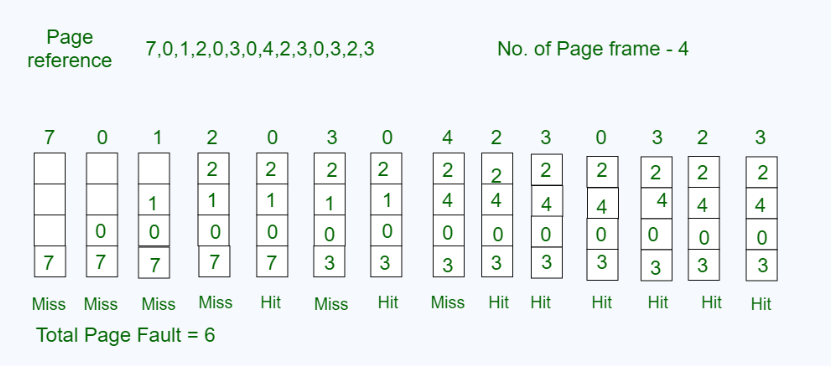

Evicts the page that has not been accessed for the longest period — the most widely used practical page replacement algorithm.

LRU keeps track of when each page was last accessed. When a page fault occurs and all frames are full, the algorithm selects the page that hasn't been used for the longest time and replaces it with the new page. This approach uses past usage patterns as a predictor of future accesses, exploiting the principle of temporal locality.
Enter any page reference string (space or comma-separated numbers) and the number of memory frames, then click Run to see the step-by-step trace. RED = page fault, GREEN = page hit.
Back to Algorithms